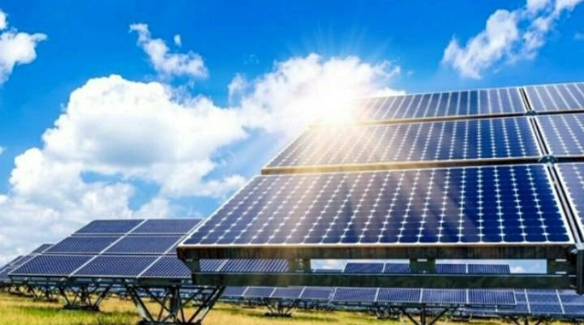
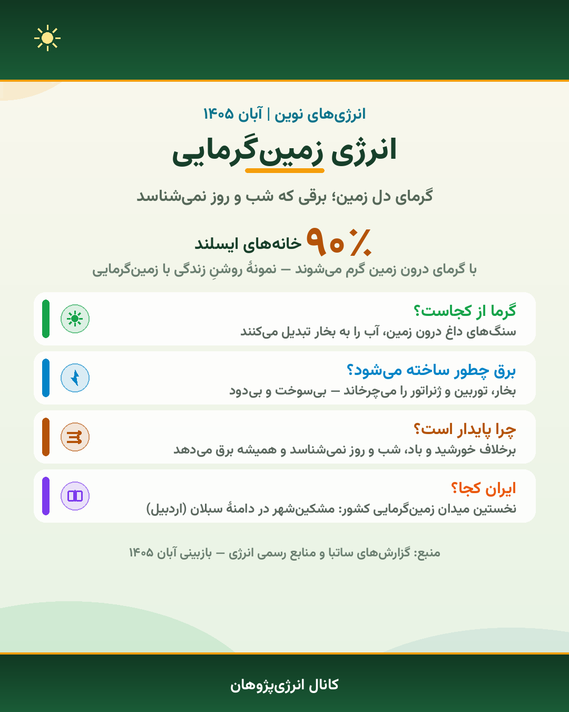
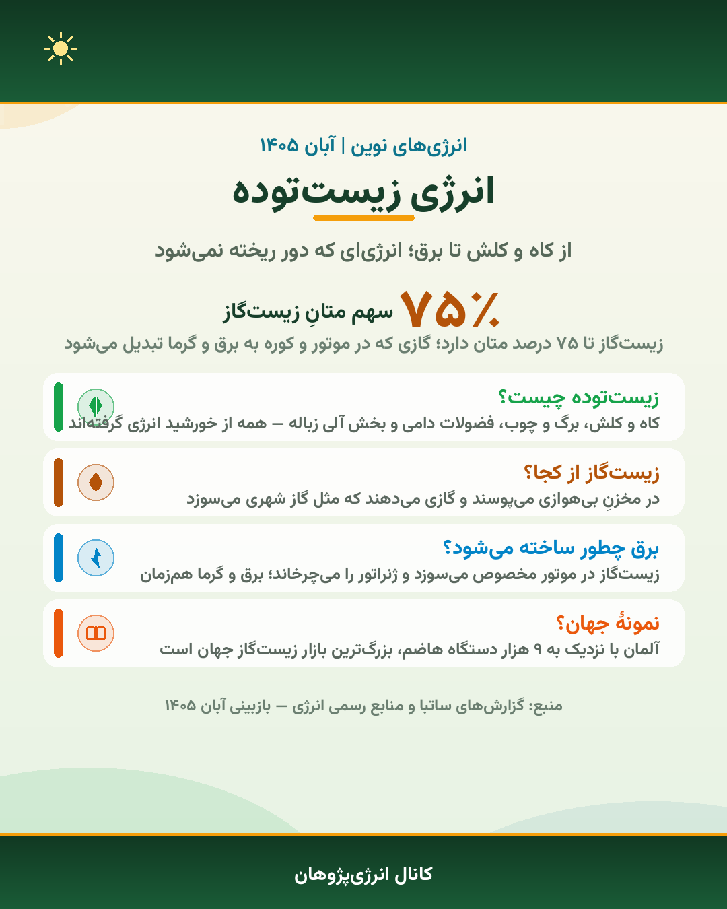
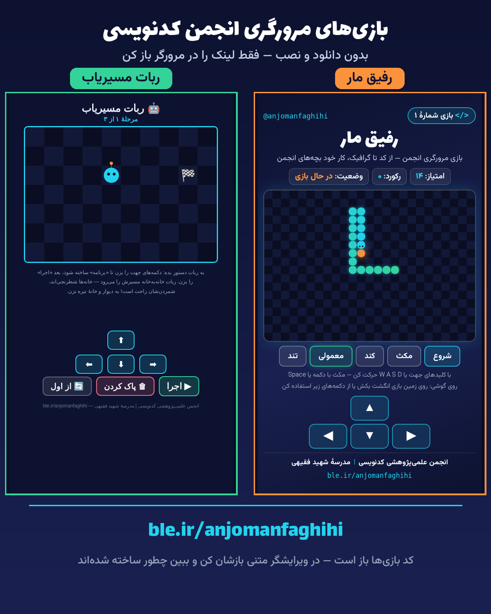

چرا «انرژی» و «کد» در یک مجله؟
این شماره، اولین شمارهٔ مجلهٔ مشترک دو کانال انجمن است: کانال انرژیپژوهان اشرفی اصفهانی و کانال انجمن کدنویسی — هر دو از پژوهشسرای دانشآموزی امام هادی (ع).
شاید بپرسید این دو چه نسبتی به هم دارند؟ بیشتر از آنکه فکر میکنید. پشت هر نیروگاه خورشیدی، سامانهٔ نظارت و پیشبینی تولید برق است؛ پشت هر توربین بادی، نرمافزاری میزان باد را میخواند و لحظهبهلحظه تصمیم میگیرد. دنیای امروز انرژی بدون کد کار نمیکند و کد بدون برق روشن نمیشود. مجلهٔ «انرژی و کد» از همین نقطهٔ اتصال شروع میشود.
قاعدههای مجله همان قاعدهٔ کانالهاست: هر خبر تاریخ و منبع دارد، هر عدد را میشود پیگیری کرد، و هیچچیز بدون بررسی منتشر نمیشود. بخش انرژی از سری درسهای «منابع انرژی» میگوید و بخش کد از مسیر دهدرسی Rust؛ بین این دو هم بازی، چالش و تقویم داریم. اگر مطلب، تجربهٔ کدنویسی یا ایدهای برای شمارهٔ بعدی داری، در کانال بفرست — نام تو کنار مطلبش چاپ میشود.
آبان در دو کانال؛ چه گذشت؟
سری Rust به درس ۱۰ رسید
چهار درس تازه در آبان منتشر شد: رشتهها، تصمیمگیری با if، حلقهها و آرایه با حلقهٔ for. مسیر دهدرسی «Rust از صفر» اکنون کامل است و فایلهای تمرین همهٔ درسها در کانال موجود است.
درس ۵ انرژی: زیستتوده
تازهترین درس کانال انرژی به سراغ «انرژیِ دور ریختنیها» رفت: از کاه و کلش تا زیستگاز و برق. با این درس، سری منابع انرژی به پنج منبع اصلی رسید — پروندهٔ ویژهٔ همین شماره.
مجلهٔ کدنویسی منتشر شد
نخستین شمارهٔ نشریهٔ الکترونیکی کدنویسی (مهر ۱۴۰۵) بهصورت پوستر + فایل PDF در کانال قرار گرفت؛ هر دو پیام کنار هماند تا خواندن و دانلود آسان باشد. حالا این مجلهٔ مشترک، ادامهٔ راه است.
هویت رسمی انرژیپژوهان ثبت شد
نام برند «انرژیپژوهان اشرفی اصفهانی» و نام کامل «پژوهشسرای دانشآموزی امام هادی (ع)» از آبان روی همهٔ پوسترهای کانال انرژی میآید؛ با موتور طراحی مستقل و رنگهای سبز و کرم خودش.
پنج منبع، یک خورشید
تقریباً همهٔ انرژیهای «نوین» روی زمین، عکسِ خورشید یا گرمای درون زمیناند؛ تفاوت فقط در این است که طبیعت این انرژی را چطور ذخیره کرده و ما چطور برداشتش میکنیم. سری درسهای منابع انرژی در کانال انرژیپژوهان، این پنج مسیر را یکییکی باز کرده است. در ادامه خلاصهٔ هر پنج درس را با عددِ کلیدیاش میخوانی — نسخهٔ کامل با پوستر در کانال است.
۱. انرژی خورشیدی
پنل خورشیدی نور را مستقیم به برق تبدیل میکند؛ برقی که روشنایی خانه، شارژ وسایل و بخشی از برق ساختمانها را تأمین میکند. در ایران، نیروگاه خورشیدی متانول کاوهٔ ساوه نمونهٔ بزرگ این فناوری است که پایینتر معرفیاش میکنیم.
مزیت بزرگ خورشید فراوانیاش است؛ چالش بزرگش هم شببودن و ابر. برای همین در طراحی شبکه، خورشید معمولاً کنار منابعی مثل برقآبی مینشیند که میتوانند در نبودِ آفتاب کار را دست بگیرند.


۲. انرژی بادی
زمین ناهموار گرم میشود؛ هوای گرم بالا میرود و هوای سرد جای آن را میگیرد — همان حرکتی که اسمش باد است. توربین این حرکت را میگیرد و پروانههایش ژنراتور را میچرخانند؛ بدون هیچ سوختی و بدون هیچ دودی.
ایران دو کورهوای معروف دارد: دشتهای بادخیز گیلان با مرکزیت منجیل و دشتهای خراسان با مرکزیت خواف. همین دو نقطه، ستونهای مزرعههای بادی کشورند.
۳. انرژی زمینگرمایی
سنگهای داغ درون زمین، آب را به بخار تبدیل میکنند و بخار توربین و ژنراتور را میچرخاند؛ بیسوخت و بیدود. برتری زمینگرمایی بر خورشید و باد این است که شب و روز و فصل نمیشناسد — همیشه و پیوسته برق و گرما میدهد.
ایران هم بخت دارد: نخستین میدان زمینگرمایی کشور در دامنهٔ سبلان، مشکینشهر، در حال شکلگیری است. کوههای آتشفشانی شمالغرب، گنجینهٔ گرمای زمین ما هستند.


۴. انرژی آب (برقآبی)
آبِ پشت سد با فشار به پایین میریزد و توربین و ژنراتور را میچرخاند. باران و برف سد را دوباره پر میکنند؛ چرخهای که تمام نمیشود. برای همین به سد میگویند «باتریِ آبی طبیعت».
مهارت ویژهٔ برقآبی سرعت است: توربین در چند ثانیه وارد شبکه میشود؛ یعنی وقت اوج مصرف، سدها پشتیبان خورشید و بادند. بزرگترین برقآبی ایران، کارون ۳ در مسجدسلیمان است.
۵. انرژی زیستتوده
کاه و کلش، برگ و چوب، فضولات دامی و بخش آلی زباله — همه اینها در زندگی خودشان انرژی خورشید را ذخیره کردهاند. در مخزنِ بیهوازی میپوسند و زیستگاز میدهند؛ زیستگاز در موتور مخصوص میسوزد و ژنراتور را میچرخاند؛ برق و گرما همزمان.
نمونهٔ بزرگ جهان آلمان است: نزدیک به ۹ هزار دستگاه هاضم، بزرگترین بازار زیستگاز دنیا. درس تازهٔ آبانِ کانال انرژی همین بود — از «دور ریختنیها» برق بگیر.

نیروگاههای ایران؛ جهش تجدیدپذیرها
خبر تازهٔ نیروگاهی ایران از ساوه آمد: نیروگاه خورشیدی متانول کاوه با ۱۳۰ مگاوات ظرفیت، در ۱ خرداد ۱۴۰۵ افتتاح شد و رکورددار تازهٔ نیروگاههای خورشیدی خودمصرفی کشور شد؛ رکورد قبلی را فولاد مبارکه با ۱۲۰ مگاوات داشت که تیر ۱۴۰۴ ثبت شده بود. «خودمصرف» یعنی برق این نیروگاه مستقیم مصرفِ همان صنعت است — گازِ ناشده یعنی هوای پاکتر برای شهرها.
این افتتاح، یک نقطهٔ داخلیِ یک جهش بزرگتر بود: ظرفیت نیروگاههای تجدیدپذیر کشور طی حدود دو سال از حدود ۱۲۵۰ مگاوات به بیش از ۵۰۰۰ مگاوات رسید — رشد چند برابری که ایران را به رتبهٔ سوم آسیا در رشد این ظرفیت رساند. نمودار زیر این پرش را نشان میدهد.
ظرفیت تجدیدپذیرهای ایران

پروندهٔ یک نیروگاه: متانول کاوهٔ ساوه
این نیروگاه فتوولتائیک است؛ یعنی نور خورشید مستقیم در پنلها به برق تبدیل میشود و توربینی در کار نیست. در سال اول فعالیت، رکورددار کشور شد و نشان داد صنایع بزرگ میتوانند بخش قابلتوجهی از برق خودشان را خودشان تولید کنند.
این الگو — «نیروگاه کنار کارخانه» — به شبکه فشار نمیآورد، تلفات انتقال را کم میکند و در روزهای گرم تابستان که مصرف به اوج میرسد، پشتیبان مطمئنی است.
مسیر دهدرسی Rust از صفر
از مهر تا آبان، هر روز ساعت ۱۰ صبح یک درس در کانال انجمن کدنویسی منتشر شد و مسیر «Rust از صفر» به ده درس رسید: از «Rust چیست؟» تا آرایه و حلقهٔ for. در جدول زیر کل مسیر را با کلمهٔ کلیدی اصلی هر درس میبینی؛ هر جا جا موندی، پوستر همان درس در کانال منتظرت است و هر درس با مثال و تمرین همراه است.
| درس | عنوان | کلمهٔ کلیدی |
|---|---|---|
| ۱ | Rust چیست؟ و چرا این زبان؟ | cargo new |
| ۲ | نصب؛ اولین برنامه | rustup |
| ۳ | چاپ متن روی صفحه | println! |
| ۴ | کامنتها؛ یادداشت در کد | // |
| ۵ | متغیرها | let / let mut |
| ۶ | انواع داده | i32 / f64 |
| ۷ | رشتهها؛ دوختن متن و عدد | format! |
| ۸ | تصمیمگیری در برنامه | if / else |
| ۹ | حلقهها؛ تکرار بدون خستگی | loop / while / for |
| ۱۰ | آرایه و پیمایش فهرست اعداد | [T; n] |
قدم بعدی مسیر، «توابع» است: یاد میگیریم برنامه را به قطعههای کوچکتر بشکنیم تا پروژههای واقعی قابلساختن شوند. درسهای تازه در کانال اعلام میشوند.
حلقه و آرایه؛ ده عدد، یک جمع
در درس ۹ یاد گرفتیم کارِ تکراری را به حلقه بسپاریم و در درس ۱۰ چند عدد را کنار هم در یک «آرایه» نشاندیم. این دو را کنار هم بگذار، ابزارداری که هر برنامهنویسی هر روز لازمش دارد ساخته میشود: پیمایش یک فهرست و انجام یک کار روی همهٔ اعضایش. مثال زیر — ترکیب همان دو درس — اعداد آرایه را یکییکی برمیدارد و جمع میزند:
let soorat = [5, 10, 15, 20];
let mut majmu = 0;
for n in soorat {
majmu = majmu + n;
}
println!("majmu = {}", majmu);
}
خروجی:majmu = 50
| let soorat = [5,10,15,20]; | آرایه: چهار عدد ثابت کنار هم؛ اندازهاش از اول معلوم است و بعداً عوض نمیشود |
| let mut majmu | متغیر تغییرپذیر؛ چون در هر دورِ حلقه باید مقدارش زیاد شود |
| for n in soorat | در هر دور، یکی از اعداد آرایه در n مینشیند؛ از اول تا آخر، خودکار |
| {} | جایخالی خروجی؛ println! مقدار majmu را همانجا میگذارد |
حلقهها در Rust سه برادرند: for برای پیمایش فهرستها — مثل همین آرایه؛ while برای تکرار تا وقتی یک شرط برقرار است؛ و loop برای حلقهٔ بیپایانی که با break از آن بیرون میآیی. قانون سرانگشتی درسنامهٔ ما: فهرست داری؟ for. شرط داری؟ while. بازی داری؟ loop.
چالش، مشاهیر و بازیهای مرورگری
چالش کدنویسی ۱ — هنوز وقت داری!
چالش جاری کانال: خروجی این برنامه چیست؟
let y = x + 2 * 3;
println!("y = {}", y);
دو گزینه روی پوستر چالش است: y = 11 یا y = 9؟ راهنما: ترتیب عملگرها مثل ریاضیِ مدرسه است — اول ضرب، بعد جمع. حدست را یادداشت کن و جوابت را به کانال بفرست؛ پاسخ رسمی در چالش بعدی اعلام میشود.
مشاهیر؛ نقطهٔ شروع از ایران
خوارزمی — ریاضیدان ایرانی سدهٔ نهم؛ واژهٔ Algorithm از نام او ساخته شد و کتاب «الجبر»ش منشأ واژهٔ جبر در ریاضیات جهان است. هر بار که «الگوریتم» مینویسی، یک نام ایرانی روی صفحهٔ توست.
گریس هاپر — «مادر کامپایلر»؛ نخستین کامپایلر تاریخ را ساخت تا برنامهنویس بتواند بهجای کدِ ماشین، به زبان خودِ انسان نزدیک بنویسد؛ کاری که مسیر زبانهای امروزی — از C تا Rust — را باز کرد.

بازی کن، بعد کدش را باز کن!
دو بازی دستسازِ انجمن در مرورگر اجرا میشوند — بدون دانلود و نصب. «رفیق مار» زمین شطرنجی دارد و دقیقاً به سمتی میرود که اولین دکمه را بزنی؛ «ربات مسیریاب» هم برنامهات را دستوربهدستور اجرا میکند تا به پرچم برسی — بازی کردنش، درس برنامهنویسی است.
جالبتر: کد بازیها باز است. فایل HTML بازی را در هر ویرایشگر متنی باز کن و ببین چطور ساخته شده — یا تغییرش بده! بازی بعدی، ایدهٔ شماست.
تقویم آبان و آذر؛ چه پیش روست؟
و برنامهٔ ثابتِ هر هفته: درسهای تازه هر روز ساعت ۱۰ صبح، پست متنوع جمعهها ۱۹:۰۰ و پیامهای مناسبتی صبح روزِ مناسبت. اسم و ایدهٔ تو هم اگر برای شمارهٔ بعدی مطلبی بفرستی، کنار مطلبش میآید.